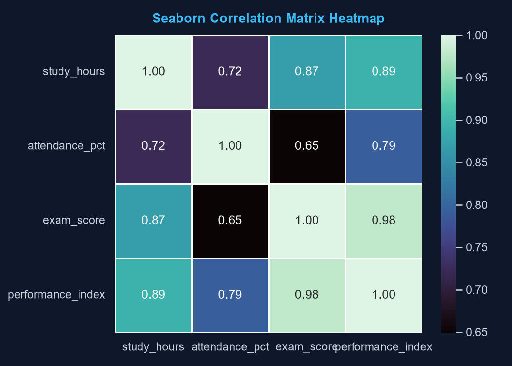
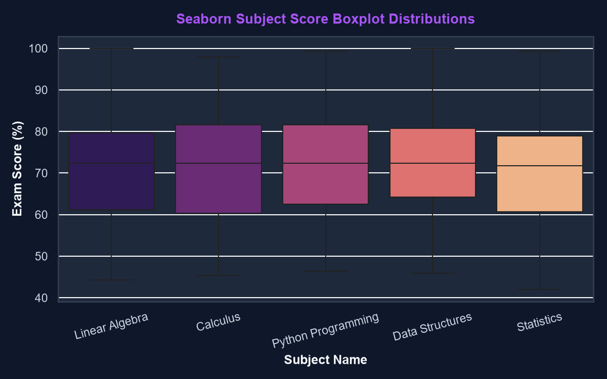
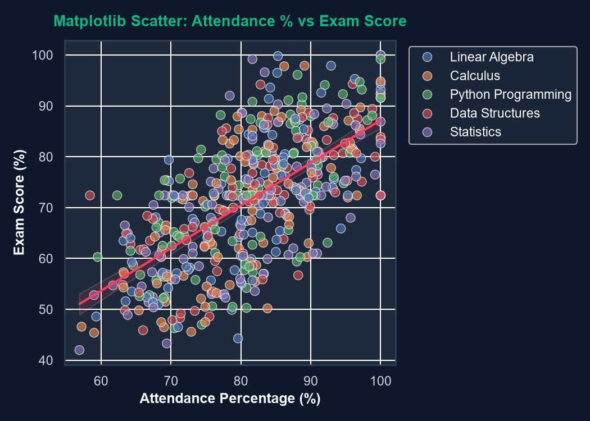
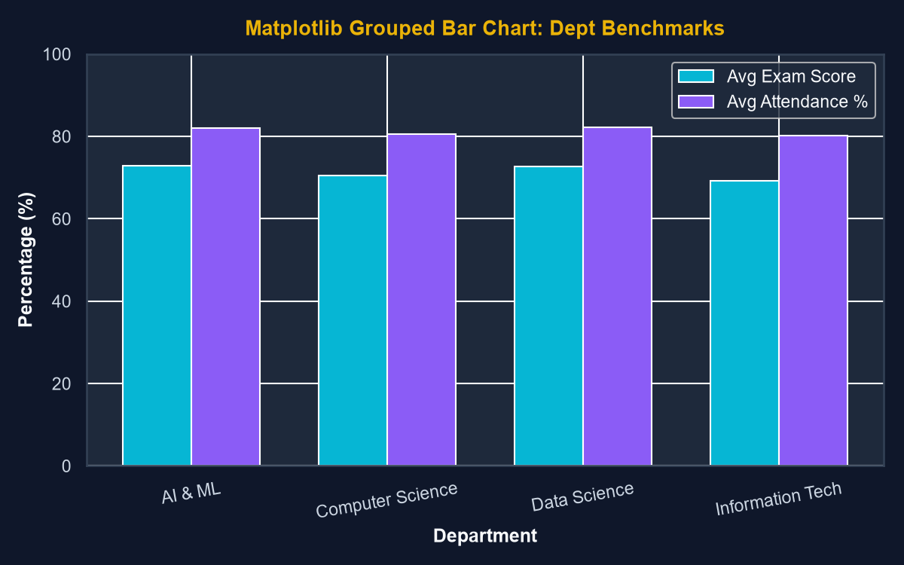

Shows positive correlation between Study Hours, Attendance %, and Final Exam Scores.

Displays score spreads, median scores, and interquartile ranges across all subjects.

Scatter plot with fitted linear regression line illustrating attendance impact on grades.

Grouped bar chart comparing average exam scores vs attendance across academic departments.
The raw dataset contained intentional missing values (NaN) in study hours, age, and exam scores.
Pandas was used for median imputation (fillna()), inner joining demographics with grades (pd.merge()), and multi-column aggregation (df.groupby()).
df['exam_score'] = df['exam_score'].fillna(df['exam_score'].median())
# 2. Merging Demographics & Grades DataFrames
merged_df = pd.merge(students_df, grades_df, on='student_id', how='inner')
# 3. Multi-Column GroupBy Aggregations
groupby_df = merged_df.groupby(['subject', 'department']).agg(
avg_score=('exam_score', 'mean'),
avg_attendance=('attendance_pct', 'mean')
).reset_index()
Grouped Summary Metrics (Subject × Department)
| Subject | Department | Avg Exam Score | Avg Attendance | Avg Study Hours | Students Count |
|---|
Instead of using slow Python for loops, we pivoted student scores into a 2D NumPy array matrix of shape (100 Students × 5 Subjects).
Using NumPy Broadcasting, we computed Z-score normalization for all 500 scores in a single vectorized line!
means = np.mean(X, axis=0) # 1D array of shape (5,)
stds = np.std(X, axis=0) # 1D array of shape (5,)
# NumPy Array Broadcasting: (100, 5) - (5,) / (5,)
Z_matrix = (X - means) / stds
# Vectorized Matrix Dot Product for Weighted GPA:
weighted_gpas = np.dot(X, weights) # (100, 5) · (5, 1) = (100, 1)
Top Student Rankings (NumPy Matrix Dot Product Weighted GPA)
| Rank | Student ID | Weighted Composite Score | Percentile Rank |
|---|
class DatasetPipeline:
def __init__(self, student_path, grades_path):
self.student_path = student_path
self.grades_path = grades_path
# List & Dict Comprehension
top_performers = [r['name'] for r in records if r['exam_score'] >= 85.0]
pass_rates = {sub: round((len([r for r in records if r['subject']==sub and r['score']>=50]) / len(records))*100, 1) for sub in subjects}
💬 Sample Viva Questions & Model Answers
Q1: How did you use Python Object-Oriented Programming (OOP) in this project?
A: We encapsulated our data workflow inside modular classes: DataCleaner (for handling missing values and outlier filtering) and DatasetPipeline (for orchestrating CSV loading, pd.merge joins, and multi-column aggregations).
Q2: What is NumPy Broadcasting and how did you implement it?
A: Broadcasting allows NumPy to perform arithmetic operations on arrays of different shapes without manual loops. We pivoted our scores into a (100 × 5) matrix X and subtracted a 1D mean vector μ of shape (5,). NumPy automatically broadcasted μ down all 100 rows to compute Z-scores: Z = (X - μ) / σ in linear time.
Q3: What is the difference between Matplotlib and Seaborn in your visualizations?
A: Matplotlib serves as our low-level plotting engine for custom grouped bar charts and regression scatter overlays. Seaborn sits on top of Matplotlib to provide high-level statistical visualization tools like correlation heatmaps (sns.heatmap) and interquartile score boxplots (sns.boxplot).